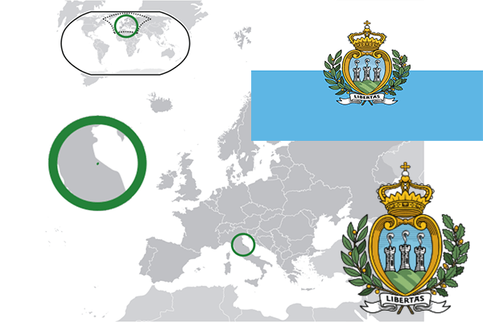

To`liq nomi: San Marino
Region: Janubiy Yevropa
Qonunchilik shakli: Respublika
Mustaqillik kuni: -
Poytaxt: San Marino
Maydoni: 61 км²
Chegaradosh davlatlari: Italiya
Aholisi: 33 029 (2016-yil)
Aholi zichligi: 539,69 /км²
Aholining o`rtacha yoshi: 83,98 yil
Rasmiy tili: italyan tili
Dini: Xristian
Pul birligi: Yevro
Telefon prefiksi: +378
Internet domen: .sm
Xalqaro tashkilotlarga a`zoligi: BMT, YeI
Dengiz va okeanlarga chiqishi: O’rta Yer dengizi.
YIM: Butun: $1.5 mlrd (2017-yil) Jon boshiga: $44,947
Yirik shaharlari: San Marino